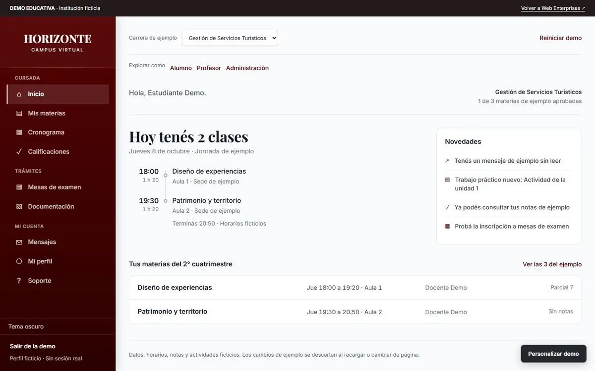
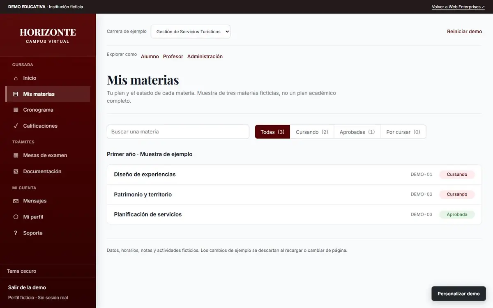

El problema
Para vender un campus virtual a otra institución no podía mostrar el de ISPM: tiene datos reales de alumnos y docentes y requiere usuarios.
Necesitaba una demo que se pudiera recorrer sin login, con la misma interfaz que funciona en producción, y que dejara claro en cada pantalla que los datos son de ejemplo.
Qué hice
- Sitio institucional
- Portada con video, tres carreras con plan de estudios y salida laboral, inscripción con requisitos y documentación de ejemplo.
- Campus del alumno
- Nueve pantallas: inicio con la jornada del día, materias con búsqueda y filtros, detalle con unidades y entregas, cronograma, calificaciones, mensajes, perfil, soporte y documentación.
- Vista docente y administración
- Planilla de notas y devoluciones del profesor; listado de usuarios, alta masiva desde planilla, carreras y materias, horarios, mesas y actas para administración.
- Reutilizar antes que reescribir
- Los estilos y varias reglas (notas, fechas, filtros, paginación, parser de planillas) se copiaron del código de ISPM con sus cuerpos originales. Lo adaptado está separado y documentado.
Más pantallas


Stack
Demo
- HTML
- CSS
- JavaScript (ES modules)
Estática, sin backend: entregas, mensajes y filtros se descartan al recargar.
Sitio comercial
- Vite
- React
- TypeScript
- Node test runner
React solo se usa para prerenderizar: en producción las páginas son HTML con enlaces nativos.
Decisiones
Datos ficticios por diseño. Perfil fijo, sin campos de contacto ni DNI, sin abrir archivos reales del equipo. La demo no aparenta tener login, permisos ni persistencia que no tiene.
Pruebas sobre la demo. Tests de campus, inscripción, mesas, administración y alta masiva, más una prueba que limita qué archivos se publican.
Privada hasta el lanzamiento. Por eso acá no hay link: la muestro en una llamada o te paso acceso.
Verlo andando
No tiene link público. Te lo muestro en una llamada o te paso acceso.